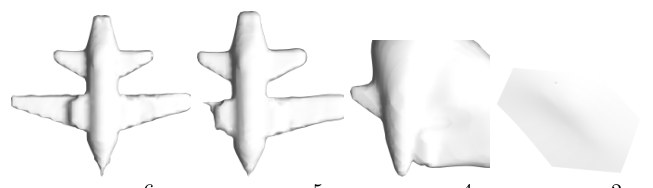
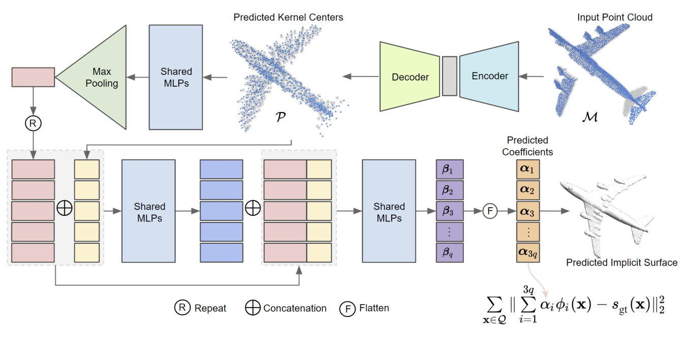
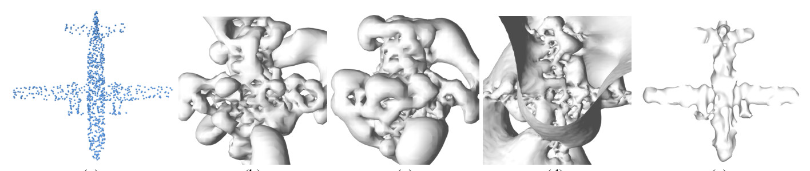
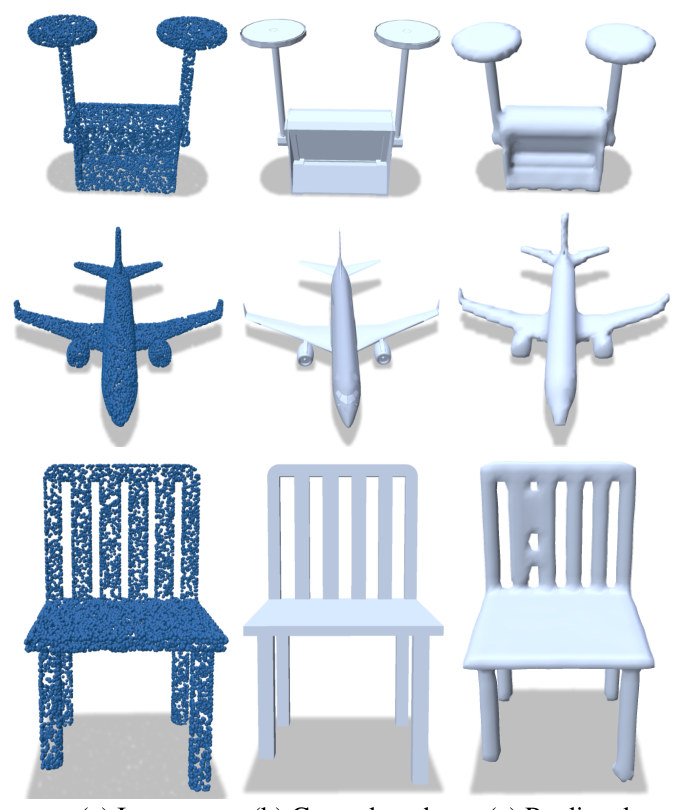

explainer · AAAI 2024
Why LISR works: local pieces, full rank
A 3D scan is a cloud of noisy, partial points. LISR turns it into a surface as a linear sum of compact pieces, and the reason it trains well is a small piece of linear algebra you can rotate in 3D below.
A surface as a sum of basis functions
We describe an object by its signed distance field f : ℝ³ → ℝ: f(x) is how far x is from the surface, and the surface is where f = 0. LISR models f as a linear combination of basis functions:
Fitting the scan means minimising the squared error to the ground-truth SDF over a set of query points. Stack the basis functions evaluated at the queries into a matrix Vᵀ and this is the linear system Vᵀα = sgt. All the difficulty lives in the matrix VVᵀ.
The optimiser is stuck in a subspace
The gradient of the loss is 2VVᵀ(α − (VVᵀ)⁻¹V sgt). Every gradient step is therefore a vector in the range of VVᵀ, so gradient descent can only ever land in α₀ + range(VVᵀ): a small, local subspace around where it started. That gives the paper’s first result:
Theorem 1. Gradient descent reaches the optimal solution of Vᵀα = sgt if and only if VVᵀ is full rank.
The paper checks this on real bases. With global-support bases the matrix loses rank; with the proposed compactly supported basis it does not:
| Basis function | Rank of VVᵀ | Maximum rank |
|---|---|---|
| Tri-harmonic | 954 | 1000 |
| Mono-harmonic | 997 | 1000 |
| HRBF | 13 | 3000 |
| CSRBF (proposed) | 3000 | 3000 |
Table 1 from the paper.

Cut space into Voronoi cells
The fix is to make each basis local. Give every kernel point pi its own 3D Voronoi cell, and switch its basis on only inside that cell:
Now pick at least three linearly independent queries in every cell. Group the queries by cell and Vᵀ becomes block-diagonal, with one 3×3 block per cell, and the rank of a block-diagonal matrix is the sum of its blocks’ ranks.
Theorem 2. With the compactly supported (Voronoi) basis and this query selection, VVᵀ is full rank.
Bonus: choose the queries so it becomes cI
Full rank guarantees convergence; conditioning decides how fast. The paper’s faster-convergence query selection (Algorithm 1) places the three queries of each cell at pi + εx̂, pi + εŷ and pi + εẑ, with the same small ε everywhere. Each 3×3 block then becomes a multiple of the identity, so
and gradient descent trains much faster.
Learning it from a scan
LISR uses two networks. A basis prediction network (a 3D auto-encoder trained with a Chamfer-L1 loss) predicts the kernel points from the partial scan; for a complete shape the input points can serve as the kernel points directly. A coefficient prediction network then predicts the coefficients for each kernel point, supervised by the ground-truth SDF.

What it buys
Overfitting a single shape with only 1000 kernel points, the compact basis with Algorithm 1 captures the global shape, while the global-support bases cannot capture any aspect of it:

Across five ShapeNet classes (chair, aeroplane, lamp, sofa, table) the paper reports a better Chamfer distance and a comparable F-score than the state of the art, and shows the representation is useful for 3D shape completion. Because the surface is continuous, it can be evaluated at any resolution and any topology.

About Figures A–C. These are my interactive illustrations of Theorems 1–2 and Algorithm 1, computed live in your browser on a small toy problem (10 kernel points in a unit cube, using the paper’s basis ∇‖x−p‖³). The table and the four figures marked “from the paper” are reproduced from the paper.